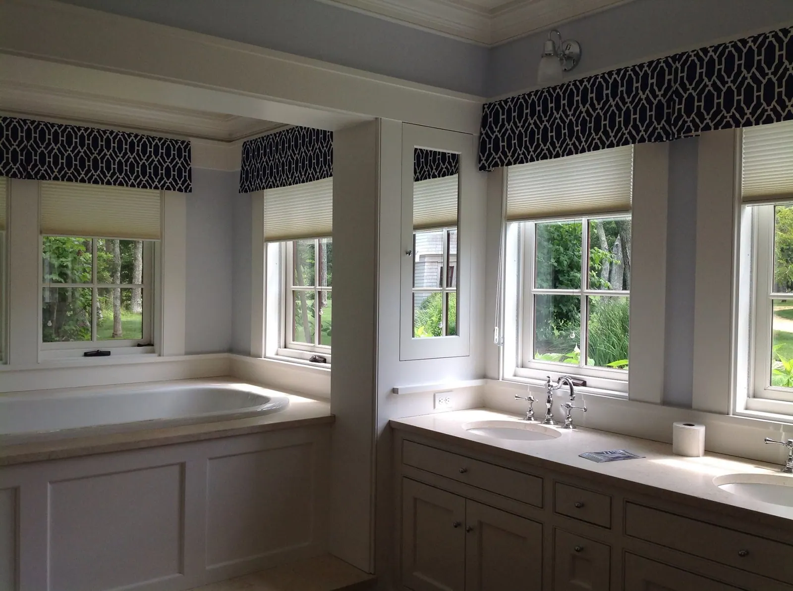
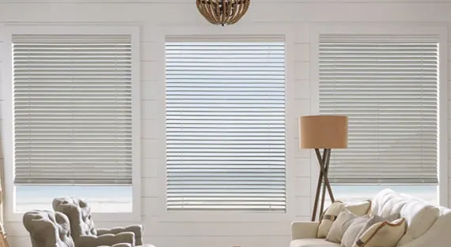
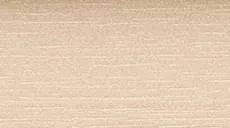
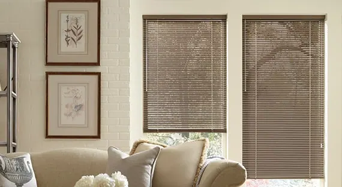

Hunter Douglas · Wood & metal blinds
EverWood® alternative wood blinds
Achieve a wooden appearance with the reassurance that the material won't age over time. Our EverWood® Alternative Wood Blinds are made with a long-lasting wood alternative, available in…
The beautiful look of wood blinds with the resilience of modern materials
Enjoy the rich appearance of hardwood with none of the usual upkeep. EverWood® Alternative Wood Blinds have classic good looks that will withstand humid weather and sun exposure. They resist fading, yellowing, warping and bowing—making them a dream option for bathrooms and sunrooms alike. Choose from a large selection of colors and realistic finishes, plus decorative upgrades.

Key features
Variable Light Control & View-Through
EverWood blinds provide view-through without having to be raised. Rotate the slats to manage incoming light and privacy.
Stylish Colors & Realistic Textures
The EverWood collection is available in an assortment of colors, including whites, neutrals and grays, and has the most realistic stain-like finishes in the industry.
Decorative Tapes
Accent your décor with decorative tapes that come in many colors and patterns.
Room Darkening
Our de-Light™ feature eliminates cord holes and reduces light leaks, blocking 50% more light than a traditional wood blind construction.
Made to Last
EverWood blinds are guaranteed not to fade, yellow, warp or bow—perfect for humid bathrooms or rooms with full sun.
A few of our favorite colors
This is just a sampling of our colors. Request a consultation and we bring every color and texture to your home, so you can see them in your own light.
- Distinctions Extreme White
- Trugrain Deco Gray
- Patina Chateau
- Trugrain Praline
- Trugrain Weathered White

Textured Almondine Trugrain Weathered White
Trugrain Weathered White
More wood & metal blinds

Parkland® wood blinds
For a rich, traditional look, opt for our Parkland® Wood Blinds. The genuine hardwood slats are crafted using 100% real wood and complement the lines of any room—like…
Explore Parkland® wood blinds
Modern Precious Metals® aluminum blinds
For a sleek, streamlined window treatment, our Modern Precious Metals® Aluminum Blinds are available in a wide range of finishes, including mattes, metallics and soft…
Explore Modern Precious Metals® aluminum blinds
Questions we hear often
What makes EverWood® alternative wood blinds different?
Enjoy the rich appearance of hardwood with none of the usual upkeep. EverWood® Alternative Wood Blinds have classic good looks that will withstand humid weather and sun exposure. They resist fading, yellowing, warping and bowing—making them a dream option for bathrooms and sunrooms alike. Choose from a large selection of colors and realistic finishes, plus decorative upgrades.
What is Variable Light Control & View-Through on EverWood alternative wood blinds?
EverWood blinds provide view-through without having to be raised. Rotate the slats to manage incoming light and privacy.
Can I see EverWood alternative wood blinds samples in my home?
Yes. What you see online is just a sampling. Book a consultation and we bring the full range of colors to your home, so you can choose in your own light.
Do you measure and install EverWood alternative wood blinds?
Yes. We take care of measuring and installation. Our experienced installers are fully trained and will ensure a perfect fit for your new EverWood alternative wood blinds, and they show you how everything works before they leave.

Let’s look at your windows together.
A free visit, real samples, and an honest recommendation. No pressure to buy on the spot.